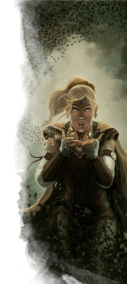
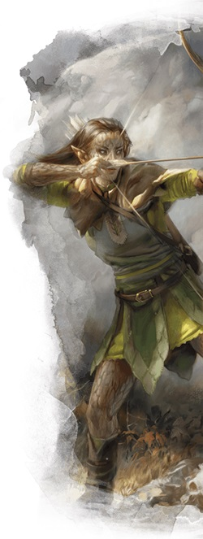
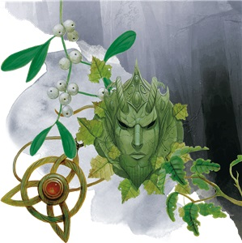

Le druide D&D 5 pour les nuls
Vous êtes un druide, un protecteur de la nature sauvage, un gardien des secrets magiques de votre croyance, un invocateur des alliés de la nature. Vous partez surement aujourd'hui à l'aventure avec beaucoup de non-druides, mais vous avez reçu la formation d'un cercle de druides, un ordre de défenseurs de la nature qui vous a enseigné le druidique, une langue secrète, l'art de la forme sauvage et des sorts magiques inconnus des clercs et des magiciens.
Cette aide de jeu va donc vous présenter les bases du druide sur les 5 premiers niveaux en se concentrant sur la façon de faire les meilleurs choix selon le type de druide que vous voulez jouer. Chaque druide a en effet une personnalité et un style différents, un rôle différent à remplir au combat, et des tactiques différentes lorsqu'il se bat.
Créer votre druide
Sans aller jusqu'à parler d'optimisation, la première étape pour bien jouer votre classe est de construire votre personnage efficacement.
- Choisissez votre race. N'importe laquelle peut faire un bon druide, mais préférez celles qui améliorent votre valeur de Sagesse. La Sagesse est votre caractéristique la plus importante car elle détermine la puissance de vos sorts et de vos autres pouvoirs druidiques, et elle vous aide également lors de vos jets de Sagesse (Survie), une compétence vitale pour toute personne vivant à la frontière de la civilisation. Les elfes des bois, les humains et les demi-elfes sont les druides les plus communs, en partie grâce à leur bonus inné de +1 en Sagesse. Les elfes des bois ont également une foule de traits raciaux qui les rendent parfaitement à l'aise en forêts. Cependant, les druides ne protègent pas que les forêts. Les druides humains et nains des collines sont parfaitement à l'aise dans la taïga broussailleuse, les déserts arides et les terres marécageuses, des écosystèmes souvent ignorés.
- Choisissez la classe de druide (évidemment !).
- Choisissez des compétences qui correspondent à ce que vous voulez que soit votre personnage. La plupart des druides devraient toutefois maîtriser la compétence Survie, utile pour tous ceux qui vivent à l'écart de la civilisation.
Quel type de druide ?
Pensez ensuite au rôle que vous voulez remplir dans le groupe, et regardons cela plus en détail. Grâce à leur grande variété de sorts et à leur capacité de métamorphose, les druides ont un large éventail de rôles qu'ils peuvent remplir en combat. Nous allons ici mettre l'accent sur les trois rôles principaux : offensif, défensif et soutien. Car, même si les druides peuvent être très résistants, ils n'ont pas les capacités de protection nécessaires pour faire un bon protecteur.
Un druide offensif utilise des sorts pour annihiler ses ennemis directement, tout en utilisant Forme sauvage pour fuir ou pour trouver une position plus avantageuse. Les druides défensifs comptent sur l'immense puissance défensive de Forme sauvage de combat pour survivre à des dégâts qui tueraient trois fois d'autres personnages. Les druides de soutien utilisent la magie et leurs capacités de classe pour apaiser les blessures de leurs alliés et renforcer leurs pouvoirs.
Jusqu'à ce que vous choisissiez votre cercle de druides (aussi appelé sous-classe) au niveau 2, votre style de jeu sera très similaire quel que soit le rôle que vous voulez jouer au sein de votre groupe, car vous n'avez qu'un très petit choix de sorts. Vous pouvez utiliser cette période au niveau 1 pour vous faire une idée de la composition de votre groupe et découvrir ce que les autres joueurs veulent faire avec leur personnage.
Offensif
Les druides qui rejoignent le cercle de la Terre au niveau 2 ont un accès continu à des sorts puissants, dont certains ne figurent pas dans la liste typique des druides. Ces druides tirent leur pouvoir d'un écosystème spécifique ; les druides liés au désert, à la forêt et à la montagne sont purement offensif, tandis que les druides de l'arctique, du littoral et des marais acquièrent un pouvoir défensif supplémentaire. Les druides des plaines et de l'Outreterre acquièrent pour leur part une puissance qui les rend plus furtifs.
Défensif
Les druides du cercle de la Lune ont accès à de nouvelles formes puissantes pour la capacité Forme sauvage, comme de puissants ours, des chats de la jungle, et même des élémentaux à de plus hauts niveaux. Puisque vous assumez toutes les statistiques de la créature dans laquelle que vous vous transformez, vous pouvez gagner énormément de points de vie grâce, ce qui fait de vous l'un des personnages les plus résistants du groupe.
Soutien
Les druides qui souhaitent soutenir leur groupe en préparant leurs alliés feraient bien de rejoindre le cercle du Berger (Xanathar’s Guide to Everything). Le cercle du Berger vous donne un lien inné avec les bêtes qui vous permet de communiquer naturellement avec les animaux, et même d'invoquer des esprits animaux pour vous protéger et protéger vos compagnons. Les druides qui rejoignent le cercle de la Terre peuvent également se concentrer sur le soutien de leur groupe en préparant des sorts de soins, mais leurs capacités de sous-classe n'aident pas beaucoup pour soutenir ce style de jeu.
Créer votre druide - la suite
- Placez votre valeur de caractéristique la plus élevée en Sagesse. Votre deuxième caractéristique la plus élevée devrait être la Dextérité, quel que soit votre rôle dans le groupe, afin d'améliorer votre classe d'armure et la puissance de vos principales attaques avec une arme.
- Choisissez un historique qui colle avec le concept de votre personnage. C'est une opportunité pour être créatif ! Comment êtes-vous devenu druide ? Étiez-vous un acolyte d'un dieu de la nature qui a choisi de défier l'organisation de son Église ? Étiez-vous un criminel qui a volé des secrets druidiques ? Ou étiez-vous un soldat qu'un druide voyageur a sauvé de la mort dans un désert ?
-
Enfin, déterminez votre équipement. Concernant le choix entre un bouclier en bois et une arme courante, vous devriez probablement choisir le bouclier en bois, car le bonus de +2 au bouclier est important, surtout à bas niveaux. Une arme courante comme une arbalète de poing peut être utile si vous voulez rester en retrait et vous battre de loin. Pour le choix entre un cimeterre et une arme courante de corps à corps, le cimeterre est le meilleur choix si vous pensez que vous allez entrer dans la mêlée. Cependant, un bâton est également un excellent choix si vous prévoyez d'utiliser le sort mineur gourdin magique au combat. Le dernier choix, qui concerne le focaliseur druidique, est purement cosmétique. Choisissez-en un qui vous plait !
Se battre comme un druide
La plupart des druides utilisent principalement leurs sorts en combat, bien que les druides du cercle de la Lune aient aussi la possibilité d'utiliser Forme sauvage de combat. Comme les clercs, les druides connaissent tous les sorts de leur liste de sorts, mais ne peuvent en préparer qu'un certain nombre par jour. Vous pouvez changer vos sorts préparés (sauf les sorts mineurs, qui sont permanents) chaque fois que vous terminez un repos long, mais il est toutefois utile d'avoir une liste de sorts de base sur lesquels vous pouvez vous replier lorsque vous ne voulez pas dépenser du temps et de l'énergie à préparer une liste de sorts spécifiques si les défis de la journée restent inconnus.
Vous ne pouvez préparer qu'un nombre de sorts égal à votre modificateur de Sagesse plus votre niveau dans cette classe. Par la suite, nous allons considérer que vous avez un modificateur de Sagesse de +2 au niveau 1. S'il est de +3, vous pouvez préparer un sort supplémentaire de votre choix par exemple ! Enfin, si vous êtes un druide du cercle de la Terre, n'oubliez pas les sorts qui vous sont accordés par la capacité Sorts de cercle. Ceux-ci sont toujours préparés et peuvent aider à compléter votre arsenal. Si la liste qui suit suggère un sort que vous avez en tant que sort de cercle, choisissez simplement un autre sort à préparer à la place.
Au niveau 1, vous gagnez la capacité de lancer des sorts et parlez le druidique, le langage secret des druides.
Au niveau 2, vous devenez capable de vous transformer en un animal en utilisant votre capacité Forme sauvage, qui peut vous donner une puissance supplémentaire en combat, mais qui peut également être utilisée pour la mobilité et la discrétion. Vous pouvez vous transformer en bêtes de FP 1/4 ou moins, et votre forme de bête ne peut pas avoir une vitesse de vol ou de nage. Les druides du cercle de la Lune possèdent une version améliorée de cette capacité.
Au niveau 3, vous avez accès aux sorts de niveau 2, qui sont décrits ci-dessous suivant votre rôle spécifique dans le groupe.
Au niveau 4, votre Forme sauvage s'améliore, vous permettant de vous transformer en bêtes de FP 1/2 ou moins, et votre forme de bête peut maintenant avoir une vitesse de nage (mais toujours pas une vitesse de vol). Vous gagnez également Amélioration de caractéristiques, qui peut être utilisée pour augmenter votre Sagesse de 2. Cela augmentera alors votre modificateur de Sagesse, vous permettant de préparer un sort supplémentaire à partir d'ici.
Au niveau 5, vous avez accès aux sorts de niveau 3, qui sont décrits ci-dessous suivant votre rôle spécifique dans le groupe.
Offensif
Si la plupart des sorts de druide sont orientés vers le soutien, vous avez tout de même de puissantes options offensives qui vous permettront de repousser rapidement des groupes d'ennemis. De plus, votre Forme sauvage vous permettra d'infliger des dégâts impressionnants à faibles niveaux en vous transformant en une bête comme un loup.
Au niveau 1, vous apprenez deux sorts mineurs de votre choix. L'un des deux devrait être gourdin magique ou fouet épineux, de sorte que vous pouvez continuer à infliger des dégâts sans utiliser d'emplacements de sorts.
Au niveau 1 encore, vous avez accès aux sorts de niveau 1. Vous pouvez préparer un nombre de sorts égal à votre niveau de druide plus votre modificateur de Sagesse (supposé être +2). Trois bons sorts de druide offensifs à préparer au niveau 1 sont enchevêtrement, lueurs féeriques et vague tonnante.
Au niveau 2, vous devriez choisir le cercle de la Terre. Cela vous donne immédiatement un sort mineur bonus. Druidisme est un très bon sort mineur pour un druide focalisé sur la magie. Vous gagnez également la capacité Récupération naturelle, qui vous permet de récupérer des emplacements de sorts de druide pendant un repos court et ainsi d'être un peu plus à l'aise durant une longue journée d'aventures.
Au niveau 2 encore, vous pouvez préparer un nouveau sort par jour. Il est toujours bon d'avoir un sort de soins en cas d'urgence, surtout s'il n'y a pas d'autres guérisseurs dans votre groupe.
Au niveau 3, vous avez accès aux sorts de cercle. Votre choix de terrain doit être basé sur le concept de votre personnage, pas sur les capacités à gagner, mais les terrains ont des effets mécaniques légèrement différents. Ces sorts de cercle sont toujours considérés comme étant préparés.
Au niveau 3 encore, vous gagnez l'accès aux sorts de niveau 2 et vous pouvez préparer un nouveau sort par jour. Cela pourrait être rayon de lune, un de vos nouveaux sorts. Il inflige beaucoup de dégâts sur plusieurs tours si vous êtes capable de maintenir votre concentration, ce qui en fait une utilisation très efficace vu vos emplacements de sorts limités.
Au niveau 4, en plus des nouvelles capacités qui appliquent à tous les druides (voir ci-dessus), vous pouvez également préparer un nouveau sort. Passage sans trace est l'un des sorts de discrétion les plus puissants, et il est utile quel que soit votre rôle dans le groupe. Si vous avez utilisé votre Amélioration de caractéristiques pour augmenter votre Sagesse, vous pouvez maintenant préparer un sort supplémentaire de votre choix. Métal brûlant est un choix dévastateur si votre campagne vous oppose à beaucoup d'ennemis en armure.
Au niveau 5, vous gagnez des sorts de cercle supplémentaires en fonction du terrain que vous avez choisi. Vous gagnez aussi l'accès aux sorts de niveau 3. Préparez l'un de vos nouveaux sorts. Appel de la foudre est un sort offensif d'une efficacité dévastatrice, dans la même veine que rayon de lune.
Défensif
En maximisant votre capacité de survie, vous serez en mesure de conserver des ressources efficacement et de rester incontournable tout au long d'une longue journée d'aventures. Vous transformer en formes animales qui possèdent beaucoup de points de vie est essentiel à cette stratégie, faisant du cercle de la Lune le druide défensif idéal.
Au niveau 1, vous apprenez deux sorts mineurs de votre choix. L'un d'eux pourrait être fouet épineux, afin de pouvoir infliger des dégâts à distance sans utiliser d'emplacement de sort.
Au niveau 1 encore, vous avez accès aux sorts de niveau 1. Vous pouvez préparer un nombre de sorts égal à votre niveau de druide plus votre modificateur de Sagesse (supposé être +2). Trois bons sorts de druide défensifs à préparer au niveau 1 sont charme-personne, nappe de brouillard et vague tonnante.
Au niveau 2, vous devriez choisir le cercle de la Lune. Cela vous donne accès à Forme sauvage de combat et à Formes du cercle, et vous permet de vous transformer en une puissante bête par une action bonus, et même de dépenser des emplacements de sorts pour soigner sous votre forme de bête. De bonnes formes animales au niveau 2 sont l'ours brun, le loup-garou et la hyène géante. Rappelez-vous toutefois que vous ne pouvez vous transformer qu'en une créature que vous avez déjà vue auparavant.
Au niveau 2 encore, vous pouvez préparer un nouveau sort par jour. Il est toujours bon d'avoir un sort de soins en cas d'urgence, surtout s'il n'y a pas d'autres guérisseurs dans votre groupe.
Au niveau 3, vous gagnez l'accès aux sorts de niveau 2. Vous pouvez préparer un nouveau sort par jour, comme immobilisation de personne, l'un de vos nouveaux sorts. Il garde au loin les ennemis et permet à vos alliés les plus offensifs d'infliger beaucoup de dégâts à la créature paralysée.
Au niveau 4, en plus des nouvelles capacités qui appliquent à tous les druides (voir ci-dessus), vous pouvez également préparer un nouveau sort. Passage sans trace est l'un des sorts de discrétion les plus puissants, et il est utile quel que soit votre rôle dans le groupe. Si vous avez utilisé votre Amélioration de caractéristiques pour augmenter votre Sagesse, vous pouvez maintenant préparer un sort supplémentaire de votre choix. Sens des pièges peut être utile dans une campagne fortement axée sur les donjons, là où peau d'écorce est un choix défensif utile même en utilisant Forme sauvage.
Au niveau 5, vous gagnez l'accès aux sorts de niveau 3. Préparez l'un de vos nouveaux sorts. Croissance végétale est un excellent sort qui peut rendre presque impossible le déplacement de groupes d'ennemis à travers des passages étroits. Dissipation de la magie est également utile, vu l'omniprésence de la magie dans les campagnes de D&D.
Soutien
La plupart des sorts de druide sont centrés autour de vos alliés et de vos ennemis. En raison de la flexibilité de cette liste de sorts (et puisque vous pouvez changer vos sorts préparés chaque fois que vous terminez un repos long), quasiment toutes les sous-classes de druide peuvent remplir le rôle de soutien. Le choix le plus utilisé pour jouer un druide de soutien reste, cependant, le cercle du Berger.
Au niveau 1, vous apprenez deux sorts mineurs de votre choix. L'un d'eux devrait être flammes, afin de pouvoir infliger des dégâts à distance sans utiliser d'emplacement de sort.
Au niveau 1 encore, vous avez accès aux sorts de niveau 1. Vous pouvez préparer un nombre de sorts égal à votre niveau de druide plus votre modificateur de Sagesse (supposé être +2). Trois bons sorts de druide de soutien à préparer au niveau 1 sont charme-personne, soins et lueurs féeriques.
Au niveau 2, vous devriez choisir le cercle du Berger. Au niveau 2, le cercle du Berger octroie Esprit totem, qui vous permet d'invoquer l'esprit d'un animal et donne un bonus spécifique aux alliés à 9 mètres ou moins.
Au niveau 2 encore, vous pouvez préparer un nouveau sort par jour. Préparer au moins un sort offensif peut vous rendre plus puissant dans une variété de situations. Vague tonnante est le seul sort de druide qui inflige directement des dégâts au niveau 2, et il peut aussi vous aider à échapper aux ennemis qui vous entourent en cas de danger.
Au niveau 3, vous gagnez l'accès aux sorts de niveau 2. Vous pouvez préparer un nouveau sort par jour, comme peau d'écorce ou amélioration de caractéristique. Les deux aident vos alliés à surmonter les obstacles et à survivre à des défis qu'ils n'auraient pas pu surmonter autrement.
Au niveau 4, en plus des nouvelles capacités qui appliquent à tous les druides (voir ci-dessus), vous pouvez également préparer un nouveau sort. Passage sans trace est l'un des sorts de discrétion les plus puissants, et il est utile quel que soit votre rôle dans le groupe. Si vous avez utilisé votre Amélioration de caractéristiques pour augmenter votre Sagesse, vous pouvez maintenant préparer un sort supplémentaire de votre choix.
Au niveau 5, vous gagnez l'accès aux sorts de niveau 3. Préparez l'un de vos nouveaux sorts. Tempête de neige est un sort offensif utile qui peut également inhiber le mouvement de l'ennemi et en faire des cibles plus faciles. Dissipation de la magie est également utile, vu l'omniprésence de la magie dans les campagnes de D&D.
Personnaliser son druide
Les druides sont une classe polyvalente qui a la capacité de se battre sur la ligne de front, faisant face à des coups qui tueraient n'importe quel autre personnage et aux sorts des plus puissants magiciens. Il y a tellement de façons de construire un druide que vous pourriez avoir un groupe qui ne comporte que des membres de cette classe et aucun d'entre eux ne ferait exactement la même chose.
La meilleure façon de différencier un personnage d'un autre est de lui donner une personnalité. Non seulement en lui construisant une histoire unique et en choisissant un historique savoureux, mais aussi en choisissant des sorts et des capacités de classe qui correspondent à votre idée du personnage, même si ce ne sont pas les options les plus puissantes.
À défendre la nature maintenant !
Basé sur un article de James Haeck, traduit par blueace